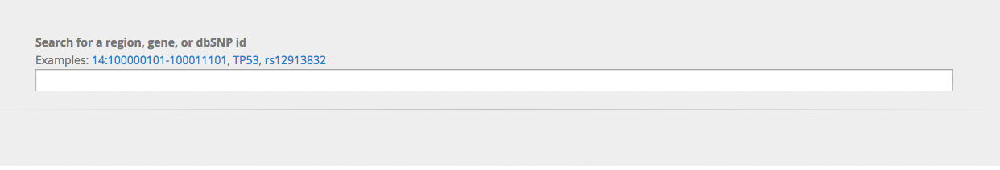
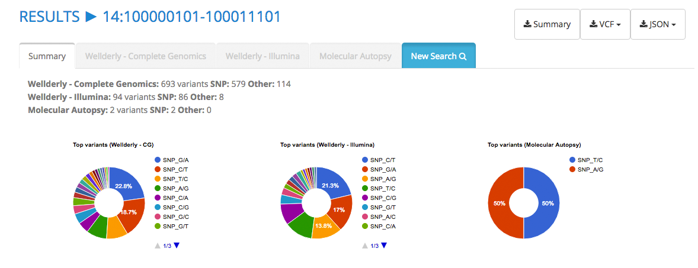
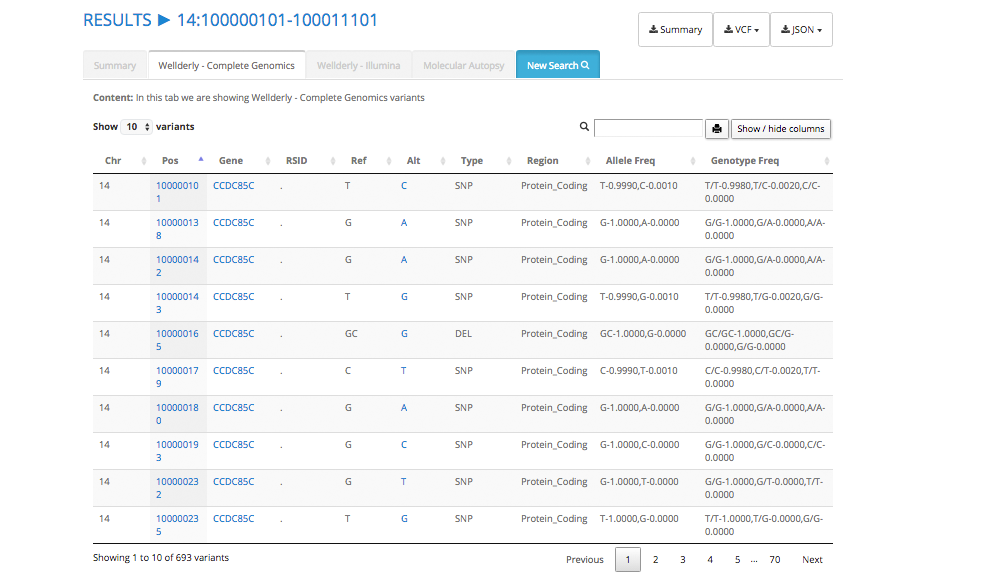

Help
Learn the basics of SRTI's variant browser
Whole Genome Sequencing of a Healthy Aging Cohort (2016) Cell, Volume 165, Issue 4,1002-1011. DOI: http://dx.doi.org/10.1016/j.cell.2016.03.022
The server allows for three types of searches:
- Chromosomic region (or position) according to genome build GRCh37/hg19.
- dbSNP ID
- Gene name
You don't need to specify anything special, just type any of the three.

The results will be displayed immediatly.
This is very similar to an standard search. Searches are limited to individual variants.
You need to specify:
- Chromosome
- Position (0-based)
- Allele
You will be automatically redirected to the results page in case a hit exists.
The server will display the results as individual tabs:
Summary tab
A short summary consisting of basic information.

Cohort tabs
If variants are found, the server will display a table. By default, allele and genotype counts columns are hidden. Note that we only display aggregate data.
The search field allows for complex searches (i.e.,regex).
Search examples:
- Deletions: Type "del" in the search field
- SNPs with genotype A/T: Type "snp A/T" in the search field.
- Insertions + deletions: Type "(ins|del)" in the search field.
- Multiallelic SNPs: Type "snp [ATGC],[ATGC]" in the search field.
Note that the searches are case insensitive.

Annotations were taken from Cypher Genomics data.
Hint: If you can't find your variant via "gene" or "dbSNP id" search, try searching by position. Positional search does not rely on annotations and thus it can find variants with incomplete "gene" or "dbSNP" annotations. Note that Wellderly Illumina variants (unpublished) were annotated by reusing annotations from Complete Genomics data. Thus, many Illumina-only variants do not contain annotations.
NB: In Illumina data, insertions, deletions and delins are labelled as INDELs, whereas in Complete Genomics they appear line-splitted as INS, DEL or SUB.
For each HTML-based query, the data can de manually dowloaded as JSON of VCF by clicking on the corresponding link on the upper-right corner of the results page.
As an alternative to HTML-based queries, we provide 3 options:
1 - Aggregate data for the Wellderly and Molecular Autopsy cohorts can be downloaded in VCF format.
2 - Web services:
- the SRTI variant browser server allows for GET and POST requests to the server, in the following format:
- http://10.40.129.44:81/query/cohort/filetype
- Cohort options are "cg|illumina|molau".
- filetype options are "vcf|json".
- Examples:
curl -k http://10.40.129.44:81/14:28986157-29040304/cg/json
curl -k http://10.40.129.44:81/TP53/cg/vcf
curl -k http://10.40.129.44:81/rs12255372//cg/vcf
wget -q http://10.40.129.44:81/rs12255372/cg/vcf -O -
3 - Chromosomic regions can be remotely queried with tabix (e.g., tabix -h http://10.40.129.44:81/files/wellderly/vcf/chr14.cg.vcf.gz 14:28986157-29040304/, tabix -h http://10.40.129.44:81/files/wellderly/vcf/chr14.illumina.vcf.gz 14:28986157-29040304 )
Individual-level variant data are available from Complete Genomics under terms determined by Complete Genomics or from Scripps Genomic Medicine for scientific collaboration with not-for profit entities (via Material Transfer Agreement), and will be deposited in dbGAP under similar data use restrictions. Contact us at genomics@scripps.edu for more info.